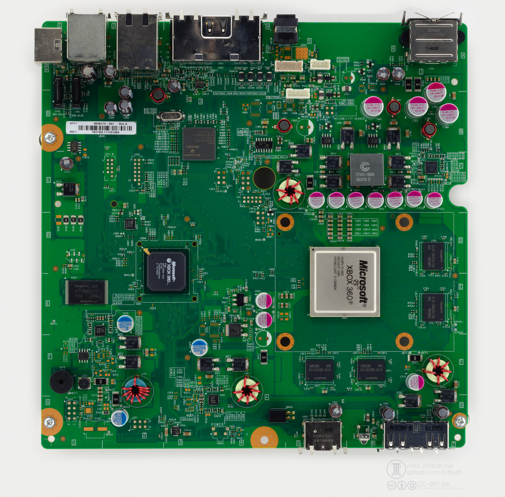

Kliknij segmentWłącz lub wyłącz łuk pierścienia
PRZÓD KONSOLI
Każdy segment jest osobnym łukiem ćwiartki pierścienia — nie pojedynczą diodą.
Wybierz model i rewizję. Interfejs łączy kody błędów, obszary PCB i kolejność uruchamiania.
Klikaj łuki G1–G4, aby odtworzyć wzór widoczny na pierścieniu. Układ odpowiada konsoli ustawionej poziomo.
Każdy segment jest osobnym łukiem ćwiartki pierścienia — nie pojedynczą diodą.
Wybierz miniaturę, aby ustawić wzór na głównym pierścieniu.
Dla każdego odczytu kliknij liczbę świecących segmentów. Cztery segmenty oznaczają cyfrę 0.
Gdy konsola pokazuje czerwony błąd, przytrzymaj SYNC. Naciśnij EJECT raz dla każdego z czterech odczytów i zapisz liczbę świecących ćwiartek. Zwolnij SYNC po READ 4.
Kliknij kolorową sekcję. Najważniejsze oznaczenia są nanoszone bezpośrednio na fotografię.

Wyszukaj designator lub wartość. Wybrany element zostanie oznaczony bezpośrednio na zdjęciu.
Wybierz zachowanie pasujące do konsoli. Grafika pokazuje, o jaki stan chodzi.
Wybierz stan widoczny na zasilaczu, nie na przednim panelu konsoli.
Kliknij etap, aby przejść do jego obszaru i punktów pomiarowych na fotografii.
Wartości niepotwierdzone są oznaczone UNKNOWN — aplikacja ich nie zgaduje.